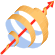

The fourth-generation fast-field-cycling relaxometer at IST: field switching by the Kea's TTL lines and X DAC.
Run scripts and scan files through uSpin32's command tool; the FFC device levels V1 and V2 from a field calibration.
A compatible fixed-field magnet and its own diagnostic definition. The built-in simulator supports training and testing.
Polarised at high field, or from a low field B0; with inversion or saturation. Each also with a solid echo.
The standard inversion recovery and saturation recovery, at the magnet's own field.
One-pulse and solid-echo RF tuning, and a Tune of any sequence before the run, then Store.